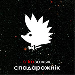

Здорава сустракаць Новы год з Дзедам-Барадзедам. Здавалася б, што можа быць лепей?
Зразумела, сустракаць яго з UltraВожыкам! І цяпер вы можаце рабіць гэта адначасова.
Слухайце новы трэк UltraВожыка "Das Дзед-Барадзед".
Гэта вам не Паца-Ваца.
"Клёва касманаўту!" на радыё
Для ўсіх аматараў радыёэтэру: "Клёва касманаўту!"
цяпер можна пачуць на хвалях найбуйнейшых радыёстанцый нашай неабсяжнай краіны.
Калі вы радыёстанцыя і чамусьці не атрымалі новую песьню, звяжыцеся з намі.
Калі вы слухач - замаўляйце UltraВожыка на сваёй улюбёнай станцыі!
Клёва ўсім - "Клёва касманаўту!"
Клёва ўсім. Пятру Адамавічу, Яўгену Шафа-Ўругвайскаму і сабачку Ібрагіму - клёва.
Бо яны запісалі новую песьню, зразумеўшы, наколькі клёва жывецца касманаўту.
Клёва гукарэжысэру, бо Вожыкі нарэшце звалілі са студыі, і ён можа са спакойным сумленьнем ехаць па марозе на Курасоўшчыну да жонкі.
Клёва таксама і вам, нашым слухачам, бо песьня пасьпела як раз на Каляды.
Карацей, сустракайце. "Клёва касманаўту!"
Акорды да "Спадарожніка", "Атлантыды" і "Крыніцы цяпла"
На двары лета, а гэта значыць надыходзіць час паходаў, палатак ды вогнішчаў і, зразумела, песень пад гітару.
З гэтай нагоды UltraВожык афіцыйна публікуе акорды да галоўнай песьні
сезону "Спадарожнік",
да клясічнай "Атлантыды",
а таксама да нетрывіяльнай "Крыніцы цяпла".
Пётар Адамавіч: "Каб зайграць «Крыніцу» без памылак, трэба быць альбо абсалютна цьвярозым,
альбо настолькі нецьвярозым, калі ўжо нічога не заўважаеш. Натуральна, мы рэкамендуем першае".
"Увогуле, UltraВожык п'е выключна Jupi", - дадае Яўген. "Гаў", - тлумачыць сабачка Ібрагім.
Якую б стратэгію вы не абралі, акорды можна знайсьці на старонцы "Музыка".
Новая песьня "Спадарожнік"
Доўга, вельмі доўга прыйшлося вам гэтым разам чакаць, дарагія нашыя слухачы. Але, спадзяемся, яно таго было варта.
Слухайце новую песьню UltraВожыка "Спадарожнік".
Некалькі слоў аб правапісе
Шмат каго сёньня ў беларускім і агульнасусьветным грамадстве хвалюе, як правільна пішацца назва UltraВожыка -
"UltraВожык", "Ультравожык", "UltraVožyk", "Ultravozhyk", "Ultravozyk" ці, можа, увогуле "Ультравожик".
Упершыню і эксклюзіўна на нашым сайце афіцыйную пазіцыю саміх Вожыкаў у гэтым пытаньні агучвае сабачка Ібрагім:
— Адзіны цалкам правільны правапіс нашае назвы - "UltraВожык".
Калі вам жыцьцёва неабходна напісаць назву лацінкай, пішыце "UltraVožyk".
Там, дзе можна выкарыстоўваць толькі стандартныя літары (да прыкладу, у адрасе нашае інтэрнэт-старонкі),
суадносна атрымліваецца "Ultravozyk".
(Раней нас усіх вучылі ў такіх выпадках пісаць "Ultravozhyk", і гэты няправапіс будзе трапляцца дзе-нідзе.)
Едзем далей. "Ультравожык" - у залежнасьці ад кантэксту, альбо памяншальна-ласкальная форма, альбо трасянка.
А вось калі вы пішаце "Ультравожик", то вы сапраўдная маскальская морда!
Шчыра спадзяемся, што тлумачэньне сабачкі Ібрагіма адкажа на пытаньне нашых слухачоў
і дапаможа прагрэсу сусьветнага дэбату па гэтай тэме.
Відэакліп да "Фабрыкі сноў"
Віншуем усіх аматараў творчасьці UltraВожыка! Для вас яшчэ адна прыемная навіна. Выйшаў відэакліп
таксама і да "Фабрыкі сноў".
Глядзець можна адразу тут, ці на YouTube.
Відэа да "Атлантыды"
У сьнежні 2007 пабачыў сьвет відэакліп на легендарную вожыкаўскую баляду
"Атлантыда"
(а не "Атлянтыда", як амаль усе прызвычыліся пісаць), і адразу заняў першае месца на кліп-марафоне ў Горадні.
Спецыяльна з нагоды стварэньня кліпу Вожыкі перапрацавалі арыгінальны трэк "Атлантыды".
Новую вэрсію песьні можна спампаваць у раздзеле Музыка,
а кліп можна паглядзець тут, альбо на YouTube.
Таямнічая "Супер-пупер Панарама"
Да UltraВожыка трапіла містычная касэта. Яе перадаў не назваўшы сябе і ўвогуле вельмі падазроны ананім,
не выключана што жульлё ды апазыцыянер. На касэце запіс не вядомай да гэтага часу беларускім тэлегледачам
перадачы "Супер-пупер Панарама" (Паца-ваца прадакшнз Хард базар), у якой тэлевядучы
Арцём Патапкін абмяркоўвае вострыя палітычныя пытаньні з самім кіраўніком дзяржавы.
UltraВожык упэўнены, што гэта паклёп і правакацыя, якая не мае аніякага дачыненьня
да рэальных асобаў ці падзеяў. А што думаеце вы?
Слухаць тут!
 Здорава сустракаць Новы год з Дзедам-Барадзедам. Здавалася б, што можа быць лепей?
Зразумела, сустракаць яго з UltraВожыкам! І цяпер вы можаце рабіць гэта адначасова.
Слухайце новы трэк UltraВожыка "Das Дзед-Барадзед".
Гэта вам не Паца-Ваца.
Здорава сустракаць Новы год з Дзедам-Барадзедам. Здавалася б, што можа быць лепей?
Зразумела, сустракаць яго з UltraВожыкам! І цяпер вы можаце рабіць гэта адначасова.
Слухайце новы трэк UltraВожыка "Das Дзед-Барадзед".
Гэта вам не Паца-Ваца.